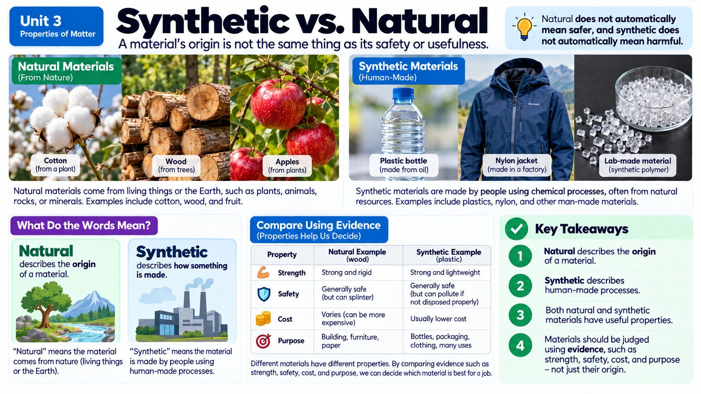
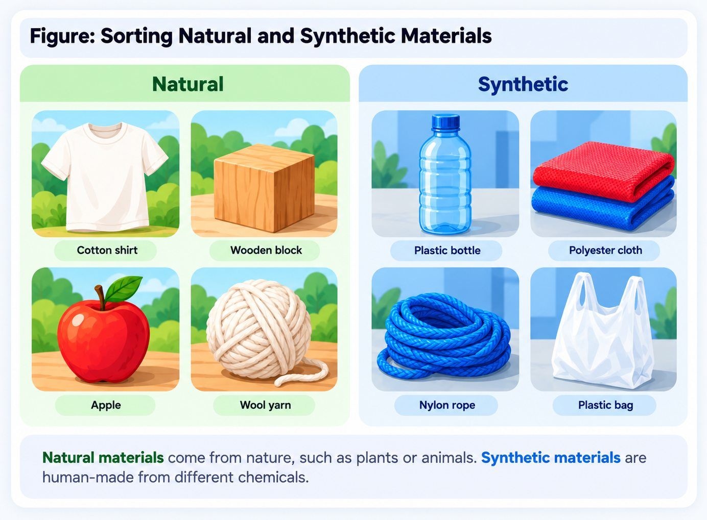
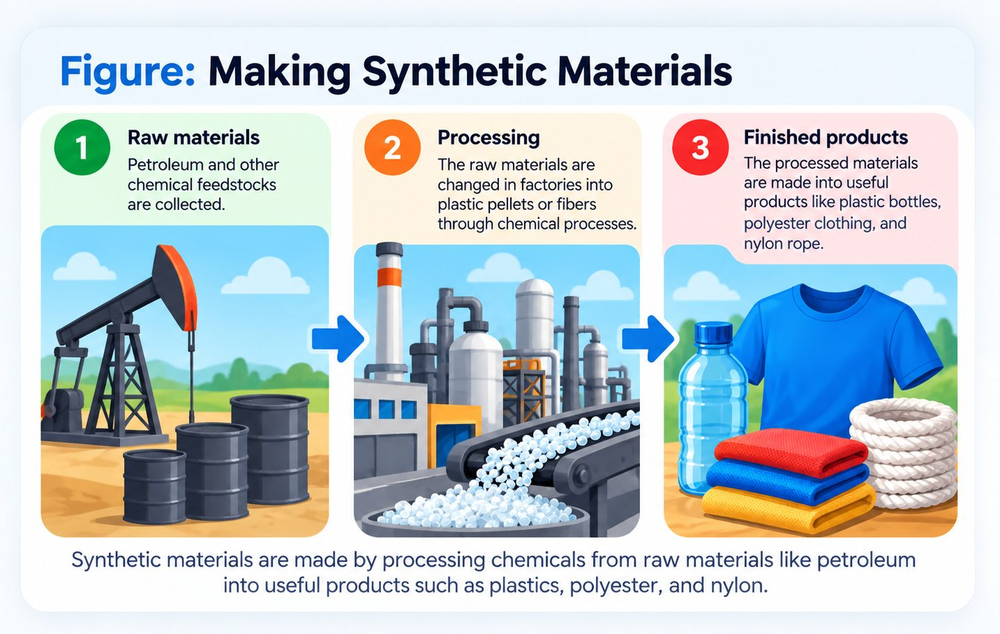
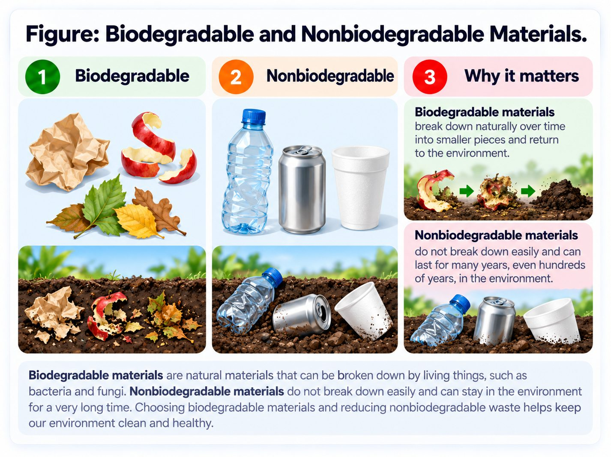

What Actually Counts as "Synthetic"?
It's tempting to think of "natural" and "synthetic" as complete opposites, but they're more connected than they seem. A synthetic material is one that's made through a human-designed chemical process - but that process almost always starts with natural resources. Plastic starts as crude oil pumped from underground. Synthetic rubber starts with petroleum-based chemicals. Even synthetic vitamins often start as natural plant compounds that get chemically altered. What makes something synthetic isn't that it appeared out of nowhere - it's that humans deliberately used chemistry to rearrange natural raw materials into something that didn't exist in that exact form before.

It also helps to think of this as a spectrum rather than a strict either/or category. Pasteurized milk is barely altered from what came out of the cow - just heated briefly to kill bacteria - so most people still call it natural. Cotton fabric is grown as a natural fiber but goes through mechanical spinning and weaving, still leaving it as a natural material. Nylon, on the other hand, starts with petroleum molecules that chemists break apart and rebuild, atom by atom, into a completely new kind of polymer chain that never existed before humans invented it in a laboratory in the 1930s. The more a material's original molecular structure has been chemically rearranged, the more confidently we can call it synthetic.
Everyday Chemistry, Everywhere You Look
Once you start looking, synthetic materials are everywhere, and they show up solving all kinds of human problems. New medicines are often synthesized in labs to treat diseases more precisely than any natural remedy could. Alternative fuels, like biodiesel or synthetic ethanol blends, are chemically engineered to reduce dependence on traditional gasoline. Plastics, spun into everything from grocery bags to surgical equipment to phone cases, are lightweight, cheap to produce, and can be molded into almost any shape imaginable. Even food can be synthetic in part, like flavor compounds created in labs to taste like vanilla or strawberry without using the actual plant.
Take nylon as a specific example of how this actually works in a factory. Chemists start with crude oil and refine out specific hydrocarbon molecules, then use heat, pressure, and catalysts (substances that speed up reactions without being used up themselves) to link those molecules into long, repeating chains called polymers. The resulting nylon polymer is melted, forced through tiny holes called spinnerets, and cooled into thin, incredibly strong threads that can be woven into anything from backpack straps to parachutes to fishing line. None of those long nylon chains existed in the crude oil to begin with - they were built, bond by bond, using energy and chemistry to rearrange petroleum's atoms into a brand-new molecular structure.

The Upside: Meeting Human Needs at Scale
Synthetic materials exist because they solve real problems, often at a scale natural materials can't match. There isn't enough natural silk or wool on Earth to clothe billions of people, but synthetic fibers like polyester can be manufactured by the ton. Synthetic fertilizers have made it possible to grow far more food on the same amount of land, helping feed a growing global population. Synthetic medicines have cured diseases that used to be fatal. In housing, synthetic materials like vinyl siding and engineered plastics are often cheaper, lighter, and more weather-resistant than some natural alternatives, helping more people afford safe shelter.
The Trade-Offs: Weighing Costs Against Benefits
None of this comes without real costs, though. Manufacturing synthetic materials takes energy, and that energy often comes from burning fossil fuels, which releases greenhouse gases and uses up a resource that took millions of years to form. Plastic production alone consumes an enormous amount of crude oil every year, and because many plastics take centuries to break down naturally, they've piled up in landfills and oceans, sometimes breaking into microplastics that turn up in soil, water, and even the food people eat.

This is exactly why researching both the positive and negative influences of a material, synthetic or natural, matters so much. A synthetic fabric might use less land and water than growing cotton, but create plastic pollution when thrown away. A natural material might be biodegradable but require clear-cutting forests to harvest. There's rarely a simple "good" or "bad" answer, which is exactly why understanding the chemistry behind these materials is the first step toward making smarter choices about how we use them, and how we might make them better.
Common Misconception: Is "Synthetic" the Same as "Unnatural" or "Unsafe"?
A lot of people assume that because a material is synthetic, it must be unhealthy or bad for you, while anything natural is automatically safe. That assumption doesn't hold up to scrutiny. Plenty of natural substances, like arsenic, certain mushrooms, or snake venom, are dangerous or even deadly, while many synthetic materials, like the silicone in baby bottle nipples or the polymers in dissolvable medical stitches, are specifically engineered to be safe for the human body. Being natural or synthetic says nothing on its own about safety - what matters is a material's actual chemical structure and how the body or environment interacts with it.
The same misconception shows up with the phrase "chemical-free." Every single material on Earth, including pure spring water and organic vegetables, is made of chemicals - atoms and molecules bonded together in specific ways. There's no such thing as a truly chemical-free product; there are only products made from chemicals people have decided to call natural versus chemicals people have decided to call synthetic. Learning to evaluate a material by its actual evidence - test data, known health effects, environmental studies - rather than by the natural-versus-synthetic label alone is one of the most useful scientific thinking skills you can build.
Why Carbon Runs the Show
Look closely at the synthetic materials in this chapter and one element keeps appearing: carbon. Plastics, nylon, polyester, medicines, fuels, and every living thing you have ever met are built on carbon skeletons. There is an entire branch of chemistry devoted to it, called organic chemistry, and it exists because carbon can do something almost no other element can.
Carbon has four electrons in its outer energy level, which puts it in an unusual spot. Gaining four or losing four would take enormous energy, so carbon does neither. Instead it shares, forming four covalent bonds at once, and crucially it will happily bond to other carbon atoms. That combination lets carbon build straight chains, branched chains, and closed rings, of nearly unlimited length. No other element is nearly this flexible, which is why millions of different carbon compounds exist while most other elements manage a modest handful.
Once you can build chains, you can build polymers. A polymer is a huge molecule made by hooking many small repeating units, called monomers, into a long chain, the way identical beads make a necklace. That single idea covers an astonishing amount of the material world. Polyethylene, the plastic in grocery bags, is thousands of small ethylene units linked end to end. Nylon and polyester are polymers. So are natural materials: cotton and wood are built from cellulose, a polymer of sugar units, and the proteins in your muscles are polymers of amino acids.
This puts the natural-versus-synthetic question in a sharper light. A cotton fiber and a polyester fiber are both long carbon-based polymer chains; the difference is that one chain was assembled by a plant and the other in a factory. The chemistry is the same family either way. What actually differs between them is the specific arrangement of atoms, and that arrangement, not the label on the tag, is what determines whether a material is strong, stretchy, waterproof, or able to break down when you are finished with it.
Real-World Connections
Plastic Bottles Becoming Fleece Jackets
Many fleece jackets are made from polyester fibers created by chemically breaking down and reshaping recycled plastic bottles into new synthetic threads.
Bulletproof Vests Made from Kevlar
Kevlar is a synthetic material engineered from petroleum-based chemicals into incredibly strong fibers, giving police officers and soldiers lightweight protection that no natural material could match.
Meet the Scientist
Materials Engineers
Materials engineers research and design new synthetic materials, testing how different chemical structures affect strength, flexibility, and durability. They're the reason today's safety equipment, clothing, and building materials can do things no purely natural material could do.
- Average salary in Southern California
- About $125,000 a yearBased on pay for materials engineers in the L.A., Orange County, Inland Empire, San Diego, and Ventura areas (U.S. Bureau of Labor Statistics, May 2025).
- Science classes to take
- High schoolCollege
Key Vocabulary
Bold, underlined words in the reading above are clickable too: tap one to see its definition pop out. Or click or tap a card below to reveal the definition.
Explore More
Chapter Review
1. Which statement best describes the relationship between synthetic materials and natural resources?
2. Which of these is an example of a synthetic material meeting a human need at a large scale?
3. What is a major environmental trade-off of large-scale plastic manufacturing?
4. Why is it inaccurate to assume natural materials are always better for the environment than synthetic ones?
5. A new synthetic medicine is developed in a lab starting from a compound found in a natural plant. Which best describes this process?
Design the Experiment
California Science Test (CAST) Practice
A student is researching two t-shirts, one made from natural cotton and one made from synthetic polyester, to decide which has a smaller overall environmental impact. She finds the following data comparing the two materials.
| Category | Cotton T-Shirt | Polyester T-Shirt |
|---|---|---|
| Water used to produce (liters) | 2,700 | 20 |
| Time to naturally decompose (years) | 1 to 5 | 20 to 200 |
| Raw material source | Cotton plants (grown on farmland) | Crude oil (petroleum) |
| Energy used in production (relative) | Lower | Higher |
Based on the data table, which conclusion about the trade-offs between cotton and polyester t-shirts is best supported by the evidence?